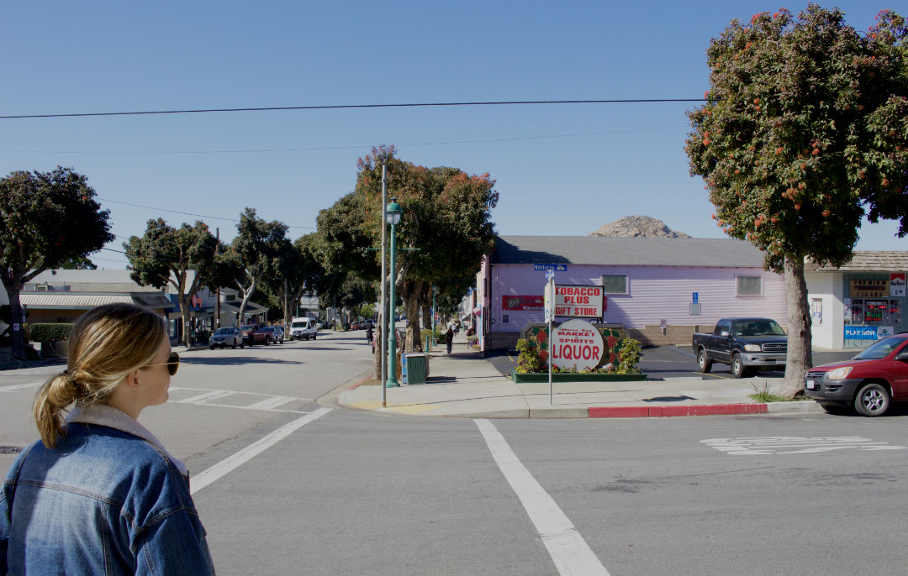
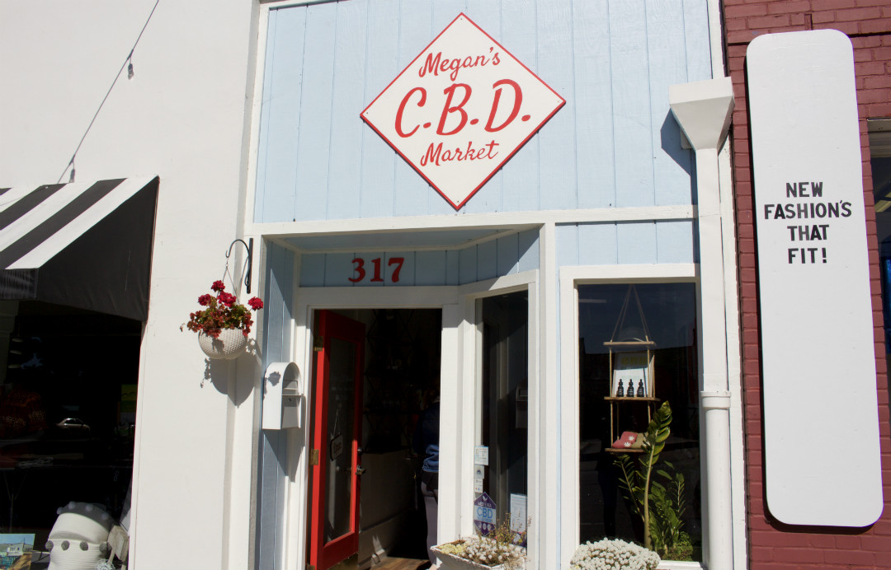
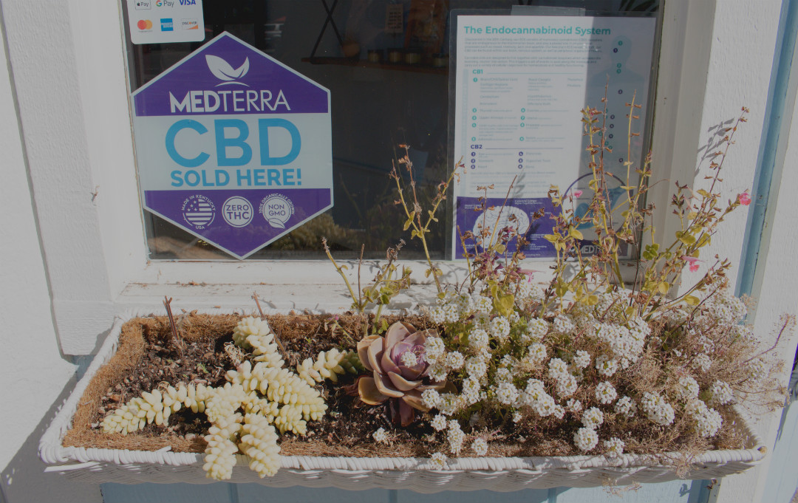
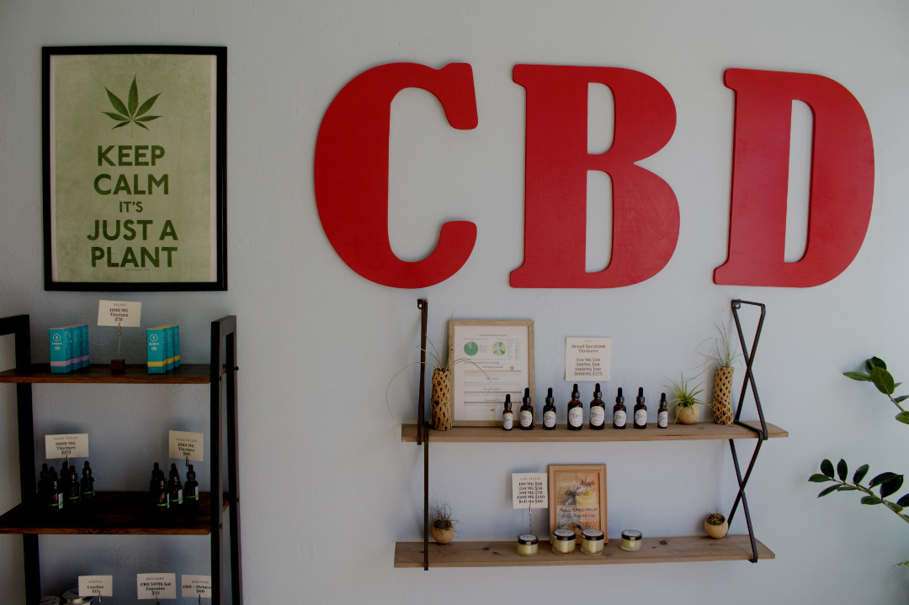
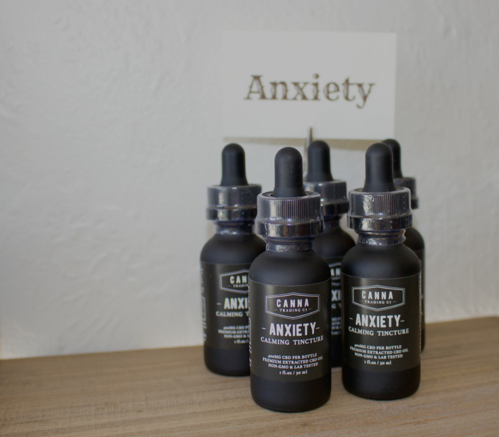
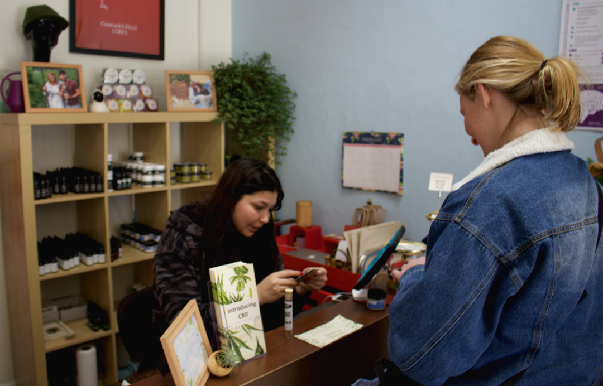
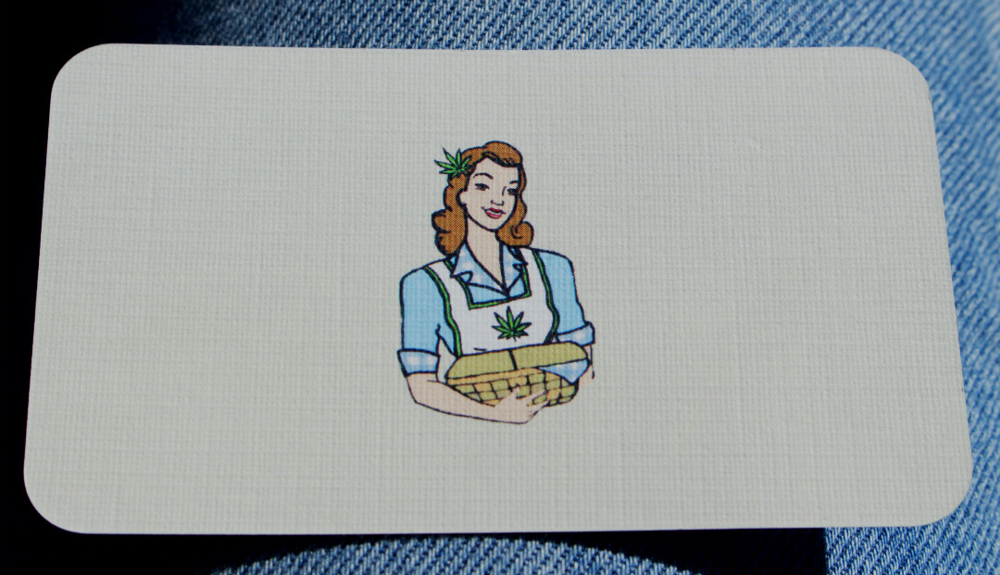
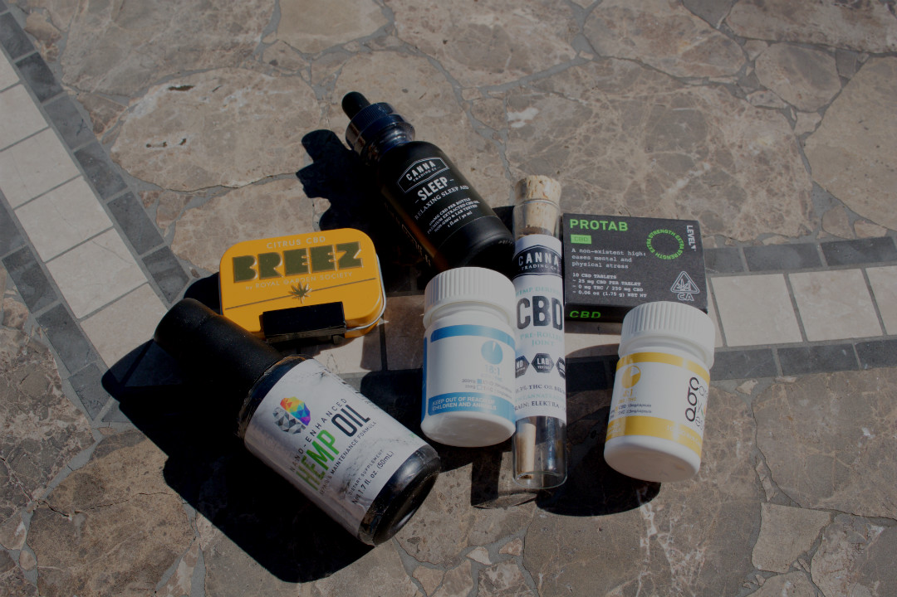

1 / 10
On Feb. 10, Macie Miller a 3rd year public health major at Cal Poly San Luis Obispo, who uses CBD to alleviate her anxiety, went on a hunt in Morro Bay to find a new CBD product.
2 / 10

“I use CBD to help with my anxiety, and I really like it because it just takes the edge off of things that would normally make me anxious. I’ve tried many different kinds, and when I use CBD I really see a difference” said Miller on her experience with CBD.
3 / 10

The shop that Miller decided to check out was Megan’s C.B.D. Market, which is located on Morro Bay Boulevard and used to only be a delivery service before it opened up shop in Morro Bay.
4 / 10

Miller likes to experiment with different types of CBD to find what works best for her. These days, CBD comes in every shape and form that you could think of.
5 / 10

Megan’s C.B.D. Market offers a wide variety of CBD products ranging from drops, bath bombs, pills, olive oils and even dog treats. They also have a natural deodorant that contains CBD.
6 / 10

“I have known Macie since the beginning of college, and ever since she has started using CBD, I have noticed very positive changes in her mental health, specifically her anxiety. She seems much calmer and less stressed when met with difficult circumstances.” said Mayumi Rubin-Saika a 3rd year public health major and Miller’s roommate.
7 / 10

This form of CBD contains no THC and requires only a few drops to be placed underneath the tongue.
8 / 10

“CBD helps ease the mind so you’re not overly thinking, which is perfect for anxiety because it eases the mind naturally and does not have any side effects.” said Raven Deharo an employee at Megan’s as she checked out Miller’s ID.
9 / 10

Megan’s C.B.D. Market has personalized business cards to fit the aesthetic of the shop.
10 / 10

No product is the same and each person has to decide what works best for them and their anxiety. Miller is sure to continue experimenting but as for now she has a new product to add to her collection.